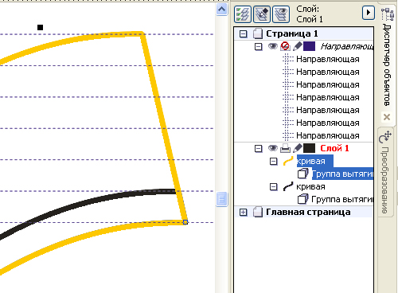

Рисование георгиевской ленты
Этим способом можно создавать полосатые ленты или флаги, ленты с кантом. Здесь для имитации объёма используется только эффект Вытягивание. Эффект освещения достигается не средствами настроек эффекта Вытягивание, а с помощью дополнительных масок светотени.
1. Инструментом Безье нарисуем образующую линию нужной конфигурации.
На одну из конечных точек линии спустите направляющую.
Мысленно представьте ширину будущей ленты и обозначьте второй направляющей. Поместите между двумя направляющими ещё четыре и распределите их равномерно с помощью окна «Выровнять и распределить».
$IMAGE2
2. С помощью эффекта Вытягивание вытяните из образующей линии узкую полоску шириной до соседней направляющей.
3. Создайте дубль узкой полоски. (Для наглядности дубль показан другим цветом).

4. Выделите дублированную узкую полоску, выбирете эффект Вытягивание и вытяните широкую полосу (вшестеро больше, чем узкая полоска, то есть до последней направляющей).
5. Выделите обе группы вытягивания и разъедените. Затем выделите в диспетчере объектов образующие линии и удалите (но можете и не удалять, если захотите выделить кромку ленты, тогда задайте им абрис без цвета, чтобы пока не мешали).
Выделите снова обе группы вытягивания и разгруппируйте.
6. На этом рисунке специально для наглядности выделены цветом элементы, которые получаются после разъединения и разгруппировки .
В диспетчере объектов переименуйте условно цифрами элементы широкой полосы и узкой.
7. Элементам широкой полосы задайте цвет заливки оранжевый. Элементы узкой полосы залейте чёрным, перетащите их в диспетчере объектов поверх оранжеых и сгруппируйте.
8. Группу чёных дублируйте и перетащите вдоль направления вытягивания на расстояние равное удвоенной ширине чёрной полоски, то есть положение между третьей и четвёртой направляющими.
Не снимая выделения снова создайте дубль, он автоматически переместится на такое же расстояние.
9. Выделите в диспетчере объектов все три группы чёрных полос и стащите их вдоль направления вытягивания на расстояние, равное половине ширины чёрной полоски.
10. Теперь разгруппируйте все три группы чёрных.
Дублируйте группу оранжевых элементов и сместите их в диспетчере объектов на нижний уровень. Чуть позже мы будем делать из них маски светотени (можно сразу их переименовать, чтобы не запутаться).
11. Из остальных разгруппированных элементов теперь выделите в диспетчере объектов одноимённые с цифрой 1 и сгруппируйте.
12. Теперь выделите одноимённые элементы с цифрой 2 и также сгруппируйте.
13. То же проделайте для элементов с цифрой 3.
14. Теперь в дисперчере объектов переместите маски светотени так, чтобы над каждой из групп1, 2, 3 располагалась соответствующая маска.
15. Выделите маску над первой группой. Выбирете эффект Прозрачность, тип прозрачности - Линейные, режим смешивания слоёв – Вычесть. Переместите маркеры прозрачности вдоль линии свет – тень. Для осветления можно на белый маркер непрозрачности перетащить из палитры цвет примерно 50 – 70% чёрного (экспериментируйте).
16. То же проделайте с маской над второй группой.
Затем дублируйте эту маску. Снова выбирете эффект Прозрачность и переместите белый (серый) маркер вдоль линии свет – тень в противоположную от чёрного маркера сторону. Таким образом из двух масок мы создали комбинированную с градиентом тень – свет – тень.
17. Для группы 3 проделайте те же действия, что и для группы 2.
Запещается копирование и публикация в любом виде без письменного согласия автора
Спасибо за урок. Только как-то сумбурно немного, и не всё понятно. Начиная от инструмента "вытягивание" (далеко не у всех Corel на русском) и заканчивая результатом. Ну в любом случае, сейчас попробую повторить.
Что-ж, вполне действенный способ.

Остается добавить, что именно этот способ хорош тем, что позволяет использовать екструдию не только прямую, но и перспективную. Правда схема рисования на ленте полос и и просчёт их расположения на ней, будет отличаться от описанного.
В общем тему можно развивать. И ещё раз спасибо.
Для этой задачи используемые здесь приёмы не годятся совершенно.
Но поскольку вопрос возник, то я всё же задумался, как выполнить такую задачу.
Решение было найдено и оформлено в виде дополнительного урока (см. Приём уроков...).
отлично
Сегодня напечатали 100 открыток, в которых были использованы элементы из уроков "Рисуем плакат..." и "Рисование георгиевской ленты".
Не могу похвастать чисто векторными работами. Доработку делаю в растре.
Но без вектора тоже как без воды.